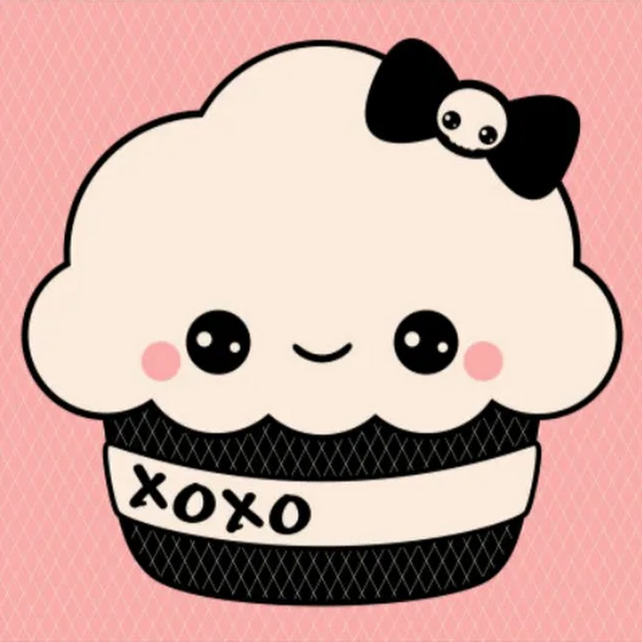
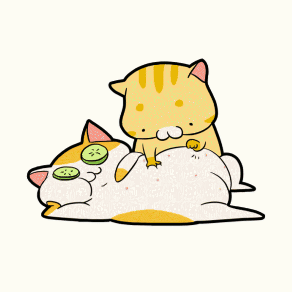
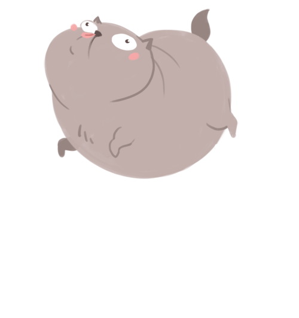
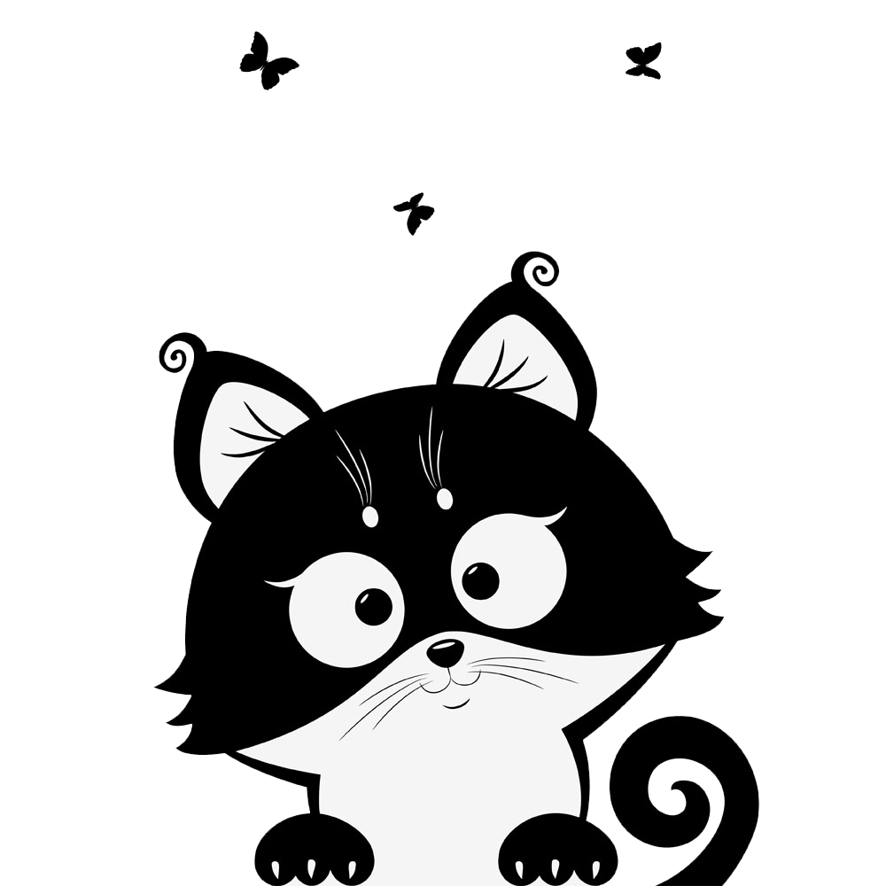

Types of cute pics |
||
|---|---|---|
| 
Humans like sweet, sugary, colorful things. The first two is a sign that there is sugar there (glucose, fructose, or some other sugar), which means energy. Colorful things usually attract the human eye because it’s an evolutionary advantage. Most fruits are colorful, and back in the bad old days, humans had to get every bit of fruit they could find. |
Another possible reason is that there is a gorging gene. During times of plentiful food, humans had to gorge themselves on food so that they’d be prepared for unreliable times. Now, although there is food in abundance, humans still have such a reaction to food.Every cat had its own personality, and individual behavior. |
|
| 
A cat is a pet who becomes a part of the family. It isn't what does a cat do, or that they are usesless,they aren't. They give you love and affection. They play with you. They play in front of you and make you laugh. Everything they do is just so entertaining. I love watching my cats play together, it's more fun than watching TV. It's just something that growns on you. |

I think that you are just born to love cats, it isn't something that anyone can explain to you. People are just born loving cats. What else can I say, cats are just wonderful little friends, they sit by you, they snuggle by you, they sleep next to you and purr and let you know they love you. Cats are wonderful pets and wonderful friends. You have to know them to love them. |
|
|
People like cats because there cute and cuddly. Some people like dogs better than cats. And some people like cats better than Dogs. Most people like kittens, or puppy's. There are lots of diffrent types of cats. And lots of unreal breeds of cats. every person likes somthing. Most people like cute things. Cats started to be found out in 1500.  |
Cats are lovely creatures, and the reason why people prefer dogs is that they don't want to have to earn the trust of a cat-they'd much rather get easy love from a dog.Cats are amazing animals and can make wonderful companions for people of all ages if cared for properly. So that's why people like cats so much. Your perfect companion might just be waiting for you there. |
|